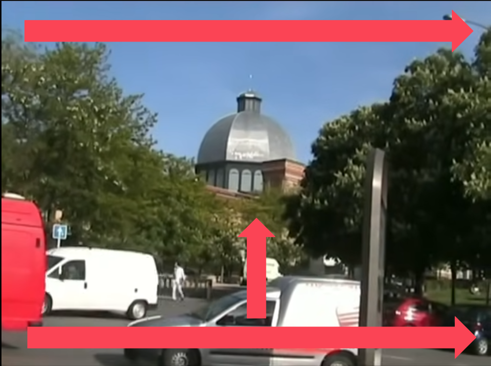
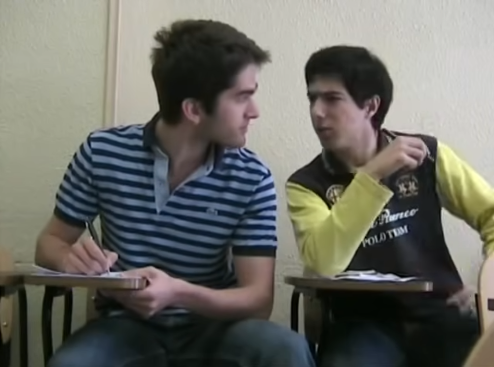
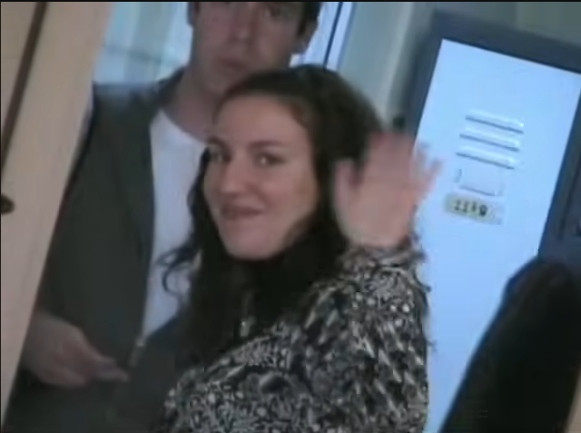
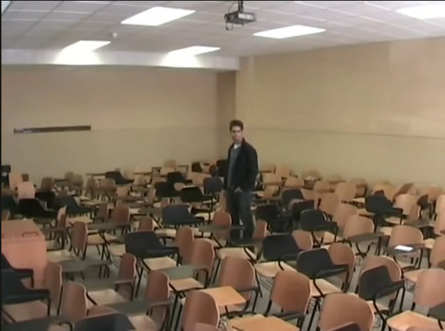
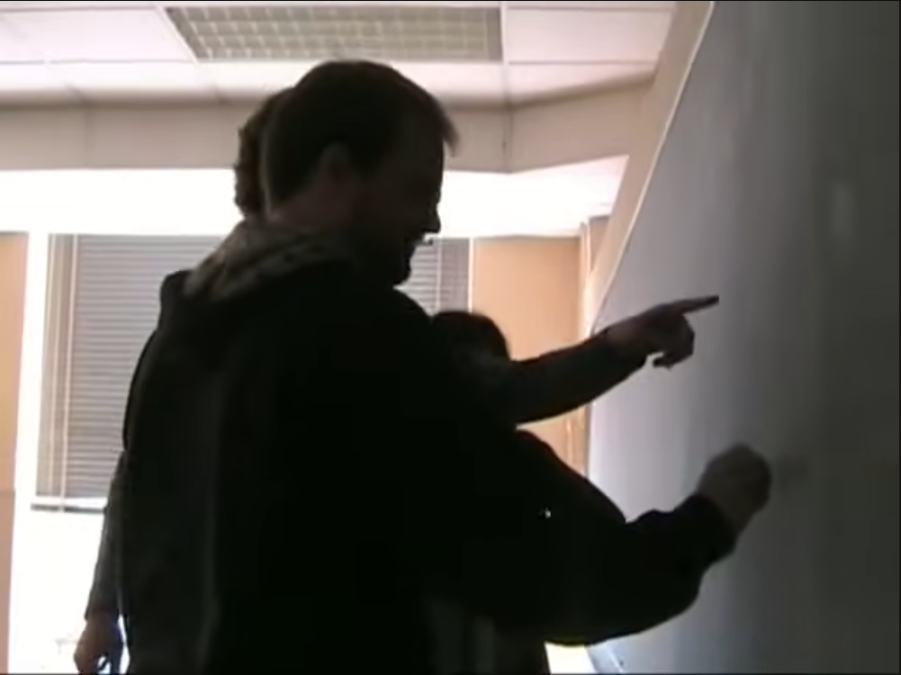
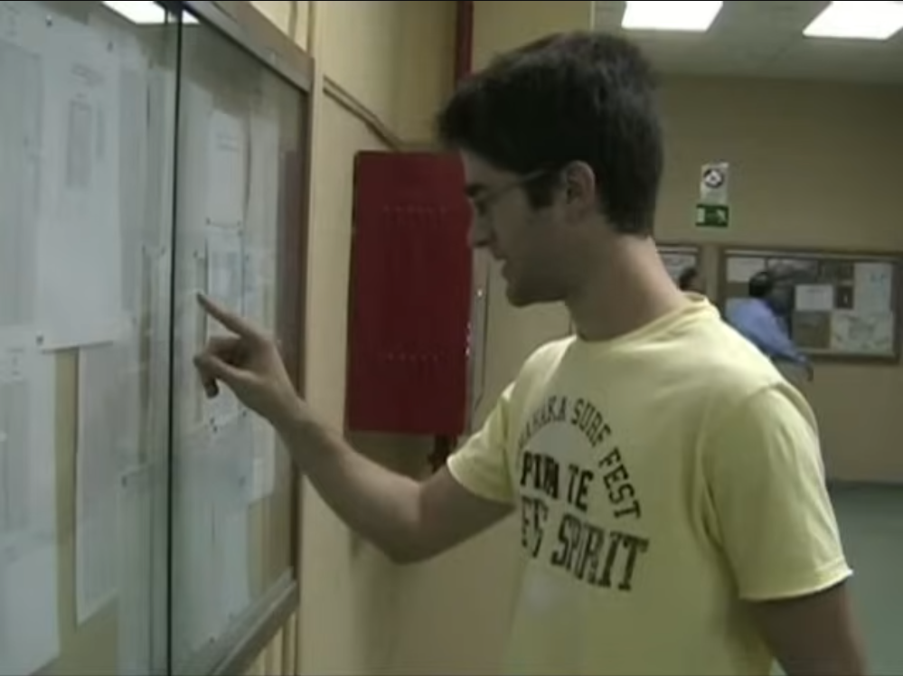

Descripción: Plano de establecimiento. En el fondo, destaca la gran cúpula la ETSI Industriales, enmarcada por árboles. El tráfico en primer plano enfatiza la vida urbana.
Plano: General
Descripción: Dos estudiantes sentados en sillas de pala, concentrados en sus estudios.**
Plano: Medio
Descripción: Alumna que abandona el aula despidiéndose con una sonrisa. Esta escena refleja la posibilidad de irse a una carrera de letras para ser más felices.**
Plano: Medio
Descripción: Estudiante solo, de pie en el aula vacía.Piensa qué demonios hace allí si puede vivir mejor, mirando con duda y arrepentimiento alrededor del aula.
Plano: General
Descripción: Figuras en nedio silueta frente a una pizarra, intentando resolver un problema imposible.
Plano: Medio-Corto
Descripción: Estudiante consultando con tensión un tablón de anuncios. El dedo índice subraya un nombre/nota. Y se desespera por haber suspendido
Plano: Plano Medio Corto